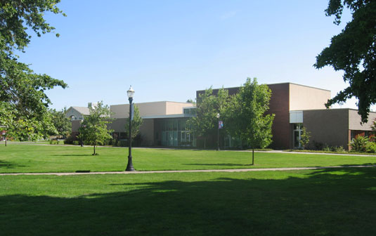
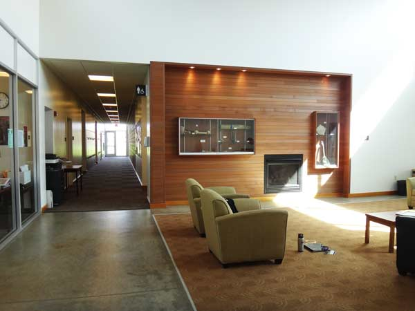

The Linfield College music program offers music training and education in a liberal arts environment. Musical performance and academic scholarship form the core of our program.
Music study at Linfield features:
At Linfield, you may earn the B.A. in music with a choice of senior project in performance, music history, music theory, or composition. A Music Education Teacher Preparation Program is offered in collaboration with the Department of Education for students who seek to obtain licensure for teaching music The music minor is also available.
Music students also have the opportunity to explore:
Many of our graduates have pursued advanced degrees at prestigious institutions, including:
Many of our graduating seniors are employed in the field of music or the arts. Linfield music majors have pursued careers in the areas of public school music education, the music ministry, and arts management, as well as with symphony orchestras, opera companies, and musical theatre organizations.
At Linfield, you can develop your imagination and experience passion in the arts. Join us at Linfield, where the adventure begins.